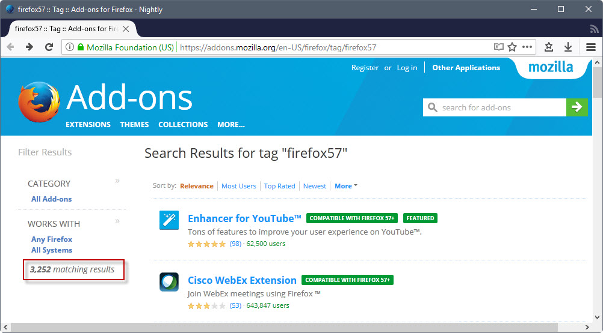

Back in March 2017 and April 2017 we published two articles about Firefox add-ons and the progress that was made towards WebExtensions compatibility.
This article is a follow up to those previous articles. It analyzes the situation in July three and two months after we published the initial articles.
Mozilla plans to release Firefox 57 as a WebExtensions supporting browser only in regards to add-ons. This means that any add-on that is not a WebExtension by that time will stop working. Firefox 57 will be released on November 14, 2017 according to the schedule of Firefox releases.
Legacy add-ons include all classic browser extensions but also themes and some other types of add-ons for the browser.
Note: While Firefox 57 is the target, the change may be postponed by Mozilla, for instance to hit the browser after the next major ESR release in March 2018.
The total number of WebExtensions

Back in the end of April 2017, 2273 add-ons were listed to be compatible with Firefox 57. While the methodology may miss add-ons, it is the best indicator that we have right now.
If you load https://addons.mozilla.org/en-US/firefox/tag/firefox57 right now, you get 3252 add-ons that are listed as compatible with Firefox 57, an increase of about 50% in two months.
To put this in perspective, Mozilla lists a total of 19550 add-ons on Firefox AMO at the same time. The 3252 add-ons are included in the total which means that about 16% of all add-ons are compatible with Firefox 57 at this point in time. The number is up more than 4% when compared to the situation two months ago.
There are several explanations for the rise. First, that some developers have ported their extensions. New APIs became available in the meantime, and that contributed to the rise as well.
Another reason why WebExtensions are on the rise is that new legacy add-ons are not accepted on AMO anymore. This means that the number of legacy add-ons stagnates, or drops (considering that some add-ons may be removed eventually).
Top Firefox Add-ons and their WebExtension Status
I checked the status of top Firefox in the second article. I checked add-ons with the most users, the highest rating, and the top featured add-ons for that.
Note that the listing is in flux all the time. I decided to concentrate on the add-ons listed in March as it allows me to compare the progress.
Firefox Add-ons with the Most Users
- Adblock Plus -- WebExtension is being worked on. See Bug
- uBlock Origin -- WebExtension is being worked on. See GitHub page.
- Easy Screenshot -- Unknown.
- NoScript Security Suite -- WebExtension is being worked on. See our article.
- Firebug -- Will be integrated into Firefox natively.
- Ghostery -- Already available as WebExtension.
- DownThemAll -- Not going to happen.
- Greasemonkey -- Unclear, design document exists, but APIs missing. Mozilla tracking bug.
- iMacros for Firefox -- Unknown
- Google Translator for Firefox -- Unknown
- LastPass Password Manager -- LastPass 4.0 is a WebExtension. Tracking Bug.
- Tab Mix Plus -- Unknown, tracking bugs exist.
- FlashGot Mass Downloader -- Unknown. Developed by NoScript developer.
- YouTube High Definition -- Unknown.
- Search and New Tab by Yahoo -- Unknown.
Top-Rated Firefox Add-ons
- Beyond Australis -- Not going to happen.
- Classic Theme Restorer -- Not going to happen.
- YouTube High Definition -- Unknown.
- OmniSidebar -- Not going to happen.
- Disable CTRL-Q Shortcut -- Unlikely, last update in 2012.
- Puzzle Bars -- Not going to happen.
- TableTools2 - Copy/Sort/Chart/Filter Table&More -- Unlikely.
- Google search link fix -- Already a WebExtension.
- Theme Font & size Changer -- Unknown.
- Decentraleyes -- WebExtension is being worked on. Source.
- Add-ons Manager Context Menu -- Unlikely, last update in 2013.
- YouTube Plus -- Already a WebExtension.
- Magic Actions for YouTube -- Already a WebExtension.
- Classic Toolbar Buttons -- Not going to happen.
- Pray Times -- Unlikely, last updated in 2013.
- Pearltrees -- Unknown.
- Reader -- Unknown.
- Adblock Plus -- Being worked on.
- QuickMark -- Unknown.
Top Featured Firefox Add-ons
- History Submenus II -- Unknown.
- Gmail Notifier+ -- Unknown.
- Copy Plain Text 2 -- Unknown.
- Clear Console -- Unknown.
- Dictionary (Google Translate) Anywhere -- Unknown.
- Tile Tabs -- Tile Tabs WE is a WebExtension version.
- Tab Scope -- Seems unlikely.
- Private Tabs -- Unknown.
- Weather Forecast Plus -- Removed.
- Lightbeam for Firefox -- In development.
- NoScript Security Suite -- Being worked on.
- Gmail Notifier (restartless) -- Unknown.
- Messenger & Notifier for Facebook -- Unknown.
- Enhancer for Youtube -- Seems likely, as a Chrome version exists.
- Torrent Tornado -- Unknown.
- BetterPrivacy-signed -- Unknown.
- Forecastfox (fix version) -- Seems likely, as a Chrome extension exists.
- Emoji Keyboard -- Is a WebExtension.
- Clean Uninstall -- Unknown.
- Cleanest Addon Manager -- Unknown.
Stats
- Working: 7
- Being Worked On: 5
- Unknown: 31
- Won't be available: 7
The overall situation has not changed much. One extension is now available as a WebExtension, and one was pulled from AMO. This means that the status of most extensions is still unknown. Some are likely being worked on, while others will probably not make the cut.
There is a possibility that some add-ons won't be ready when Firefox 57 hits, but that they will be released at a later point in time.
Closing Words
About four months are left before Firefox 57 hits the release channel. A lot will happen in those four months, and it is quite difficult to estimate how well things will turn out for users of the browser in regards of ported legacy add-ons.
Now You: Let me know what you think in the comments below.
I've seen a Mozilla person say on Reddit that there should be a strengthened focus on WebExtensions API after Firefox 57, since right now significant effort is also spent on implementing Quantum and finishing multi-process and sandboxing. So more API will continue to come after 57 which means more ports of legacy add-ons.
For Tree Style Tab users since that add-on is not mentioned: the developer wants to port it and is active, that's all I know for now.
They could of handled the situation better. too many developers have abandoned development and resent Mozilla because they are not being heard. I tthough mozilla was about freedon and users being control, guess not. saving a couple milliseconds in rendering time is more important. ..but what I know, I'm just a long time Firefox user, I'm not part of their target demographic, which is IE and chrome users apparently.
From Mozilla employee Callahad:
https://www.reddit.com/r/firefox/comments/6iam56/14_of_addons_are_webextensions_devtools_will_ship/djq7p7p/
https://www.reddit.com/r/firefox/comments/6hcqja/no_sweat_57_is_still_2_update_cycle_away_firefox/dj7g0nr/
@Rakk: What this Callahad guy conveniently ignores is that Firefox will literally have no advantage over its competitors, whatsoever. Why should someone use Firefox 57 over Chrome? Please answer this question based on actual functionality, not based on ideology (like Firefox being developed by a non-proft organization etc.)! I imagine these plans will horribly backfire, just like Australis did. It will accelerate Firefox's downfall instead of slowing it down. More often than not people are causing vast damage with good intentions. Though I must say I dislike all of his points, for I am a power user.
Thx for this article Martin as always, how will themes will be affected like FT Deepdark?
All legacy themes -- read full themes -- are dead.
It would be very smart of Mozilla to postpone the "final solution of extensions question" to FF60 - after the FF59 ESR - or at least keep the config entry for re-enabling good extensions. But since when Mozilla was guided by the common sense?..
Mozilla needs to release Quantum and make a ton of changes and not postpone them any longer. It's already late enough, if Firefox had been ready when IE started dying, its market share would likely have increased noticeably more than it actually has. But IE isn't quite done dying yet so it's still worth it, although not much time is left.
Such an opportunity to constrain Chrome's push for monopoly won't occur again any time soon. Firefox was not ready to host the bulk of fleeting users because it cared so much about legacy add-ons when implementing E10S, and spread that over something like 3 years.
Not disagreeing, but how will Quantum be noticeable to the average user that it will make them want to use Firefox instead of IE or Chrome?
Users leaving IE are (mostly were) looking for a new home, and they are trying alternative browsers en masse. Mainly the well known ones such as Chrome, Firefox, and Edge on Windows 10. The browser that feels snappiest has an edge. Chrome has an edge for being so well known, pushed, and integrated into Google services including Android. Edge has a disadvantage for being not quite ready and most importantly only present on Windows 10. Firefox was not quite snappy enough compared to Chrome in a couple domains such as CSS and UI responsivity.
With Quantum Firefox is not just supposed to catch up, it's expected to take the technological lead like Chrome did on its release day, when multi-process hit the market. Most IE users are done moving away, and most of them went to Chrome, the rest went to Firefox and Edge. I don't think it's late enough to justify another delay on Quantum though.
Adding more WebExtensions API is the second highest priority IMO. Will become first after Quantum is done...
I'm a privacy guy first and then an add-on guy, for me the Tor Uplift should be highest priority and then WebExtensions API. But Quantum first, my interests are meaningless if Firefox misses opportunities like this.
My feeling is that abandoning one's specificity to run after someone who's already running faster than you is not a wise decision. Doing so will initiate many departures from historical users of the browser without attracting new users when Firefox will appear to them as a fork of Google Chrome (even if it will not be, or at least not completely).
I truly believe, with many others, that Firefox should have enhanced its personality rather than deny it. Electrolysis, whatever enthusiasts may say, is not and never will be a required component for a better browser experience and WebExtensions are a big joke. I use at this time FF52ESR with e10 totally disabled, 65 add-ons, and the configuration runs brilliantly. I remain at this time in the incertitude of my future browser; It could be another than Firefox, all depends of reality which may always appear to be different than what is announced, expected and conceived to be. And I may also just stick to FF57ESR after is EOL, like others do with XP on the system level.
Anti-progress is the master word of our era, as a logical consequence of an hysterical quest for so-called innovation, when one could expect a browser developer to emphasize on privacy and security, which they do but not to the point of regarding those as a veto when innovations come to be in contradiction. I happen to read Bugzilla comments and I've seen more than once a comment emphasizing on the privacy issues of this or that new Firefox feature be simply ignored, as if the leading idea was that you don't stop progress and that we'd have to bear the consequences, amen. I don't see it that way.
"I'm a privacy guy first and then an add-on guy, for me the Tor Uplift should be highest priority and then WebExtensions API".
DITTO!! - Now more than ever.
@Tom
" happen to read Bugzilla comments and I've seen more than once a comment emphasizing on the privacy issues of this or that new Firefox feature be simply ignored"
I too have been digging Bugzilla comments for a decade or so, and I've never seen a browser so dedicated to privacy concerns. It's harder than ever to deny with the Tor Uplift. Some mainstream features require a network connection, such as Sync or Healthreports, but *everything* can be disabled and even when enabled, Mozilla weaved a bunch of precautions into the designs, such as the fact that Sync data is fully encrypted before leaving your device so that Mozilla or MITM can't read it, similarly to ProtonMail emails. Most importantly, the browser attempts to protect privacy from websites by provided finer grained add-on APIs for content blockers along with anti-fingerprinting protections and soon, first-party isolation (major feature), containers, built-in canvas blocker, ...
If you really must cast doubt on that, you'll need to bring proof with links and stuff, something I don't ask of you because we would be wasting our time.
Additional information regarding my above comment above when I wrote, " I happen to read Bugzilla comments and I've seen more than once a comment emphasizing on the privacy issues of this or that new Firefox feature be simply ignored[...]".
Example 1
'Cannot enable FIPS in Firefox 53.0a2' at [https://bugzilla.mozilla.org/show_bug.cgi?id=1337950]
The least which can be noted is reluctance first. Finally the issue got fixed.
Example 2
'Pref network.websocket.enabled is no longer reasonable' at [https://bugzilla.mozilla.org/show_bug.cgi?id=1091016]
Why? Why no longer reasonable? On that thread user nathan.osman disagreas and mentions that he has developed an add-on able to to disable WebSocket : the 'WebSocket Disabler' add-on (which I use by the way).
These are examples I have in mind because I had bookmarked both. I recall a few others, not many but still: there is obviously, amid the developers themselves perhaps, a duality between those who strive for innovation and consider privacy as a collateral value and those who aim to keep privacy fundamentals as the first value.
Web Socket is a web standard ( https://en.wikipedia.org/wiki/WebSocket ), Mozilla has to support web standards.
But add-ons will keep control over web sockets after Firefox 57, even uBlock Origin can do it, because Mozilla decided to allow that. (And I wouldn't accept any other decision)
As for FIPS, well it got fixed. I'm weary to enable it even though I am as privacy-centered as you but maybe you're right and it's best.
Meanwhile you have:
- Normalize fonts for all privacy-minded users. Fonts are a huge fingerprinting vector ( https://bugzilla.mozilla.org/show_bug.cgi?id=1336208 )
- Spoof the Navigator API ( https://bugzilla.mozilla.org/show_bug.cgi?id=1333651 )
- Spoof or disable Performance API ( https://bugzilla.mozilla.org/show_bug.cgi?id=1369303 )
- Canvas control, either through a prompt or a clever and less intrusive way to prevent fingerprinting through it ( https://bugzilla.mozilla.org/show_bug.cgi?id=967895 )
The list is very long and no other browser shows even the will to do a tenth of it. There are valid reasons to go to Pale Moon or ESR or who knows what, but if privacy is my first concern, then I will stay up to date with Firefox because privacy protection is being severely boosted as we speak. First party isolation alone would warrant it, since it prevents a user's activity on one site to be linked with their activity on another site: Even with all your add-ons and privacy tweaks, unless you use uBlock Origin in default block mode for all resources, you should still benefit noticeably from FPI. All kinds of storage including cache and ETAGs, but also fingerprinting methods based on scripts, CSS, SVG or whatever, they shouldn't be able to track you across sites with FPI.
@Anonymous, I know Websocket is a standard already, I'm not wishing it wouldn't be but only wondering why the corresponding about:config setting was removed, hence obliging a user who wished to disable it to install a dedicated add-on ... It's not dramatic but I don't understand why, in the name of what, a developer arrived to the conclusion that "it is no longer reasonable" : you see, that's what I fear in development, the fact that a smart brain decides with questionable arguments.
Thaks for you links to problematics handled in BugZilla. Interesting. They all concern privacy items to be included when the user has set privacy.resistFingerprinting to true. Again a surprise when this setting is hidden:
user_pref("privacy.resistFingerprinting", true); // Default=false (hidden pref)
Why have it hidden? If it hadn't been for Pants' Ghacks user.js work and documentation I'd have most likely this setting set to off by default when hidden ...
Anyway, far from me the idea that Firefox developers would (all) be electrified by the thrill of innovations, be they standardized, but I simply remained stunned when 1-default values related to privacy are opt-out when they should be opt-in, and 2-Firefox privacy settings are removed. Otherwise, I remain confident that a Mozilla spirit, that of core concern for privacy and security, remains active. I also imagine that in today's world there are not only temptations to forget the "price" of an exciting innovation but also a struggle between two concepts of what a browser should include, bring. C'est la vie. I simply hope privacy and security will always prevail in the Mozilla way of life, read coding.
" They all concern privacy items to be included when the user has set privacy.resistFingerprinting to true. "
Yes they are about Tor Uplift's anti-fingerprinting meta bug. I used bookmarks too, that's why :)
There's more, and other meta bugs.
privacy.resistFingerprinting will be exposed through the UI (presumably as a checkbox) once Mozilla is ready. They first have to decide things such as which protections will be enabled by default and which are best kept under privacy.resistFingerprinting as an opt-in, for web compatibility reasons. These aren't easy decisions, they require various studies and out of the box thinking, for example Tor Browser uses a prompt for canvas protection, but Mozilla engineers thought of a way to avoid having that (repeated prompts cause warning fatigue which is counterproductive), though at this stage it's just an idea and it may end up being a regular prompt, in which case the protection has to be opt-in.
As for WebSocket, that pref was removed 3 years ago. Since then I have seen Mozilla's position towards privacy concerns become a lot more thorough and embedded within design decisions. I think it started within the last two years when policy shifted, and really took off around the start of the Tor Uplift project... Though to be fair, before that privacy was still more important to Firefox than it is today for any other browser Tor excluded. (c.f. Sync encryption, complete opt-outs for automatic connections, lots of about:config for web standards like Gamepad API or Battery, and for other features like prefetching, some JS timing protection, making HTTP headers less fingerprintable, ...)
Anyway one of the reasons given in your bug was:
" The Tor folks and others disable this for privacy reasons. Not entirely sure how it's worse than XHR, although for Tor it used to be a problem that it leaked DNS (bug 751465)."
The bug DNS leak is apparently fixed, so what's the remaining privacy issue with websockets ? https://pusher.com/websockets
As long as they can be filtered the way XHR and other network connection can, how is it bad ? I think on Chrome and other browsers filtering or blocking websockets is an issue, but not on Firefox. What I mean is that I don't see how the protocol is a privacy threat in itself ?
@Drool, I'll be honest : I may over-react, or more exactly react on a non-issue (i.e. Websockets) moreover because I am *not* a techie. I'd be sorry to replace ignorance by demagogy. But once you start riding on the Optimization Highway it's sometimes tough to find the right speed.
I'm aware of the DNS-related issue which brought WebExtensions to be pointed. At the same time I discover on Bugzilla a developer which disagrees on the removal of the ability to disable WebSockets through about:config, starting Firefox35+. Imagine two doctors with different analysis of one's health condition ...
From there on, be it this setting, this feature as well as others an independent choice is possible only with knowledge (like everywhere, democracy included) and without requires lectures, comparison of arguments and finally a choice which may be the wrong one, be it by excessive confidence or excessive suspicion.
I read your comments with interest. Learning is a 24/7/365 occupation, and stubbornness, be it psychological or demagogic, a trap to avoid.
Finally, when in doubt I'll consider the suspicion option to prevail when doing so has no consequence on my life, browsing experience here. I have no use for WebExtensions at this time so I'll keep the add-on in order to have it disables ... BUT ... should I consider a need that I'd remember your argument.
It's the way it goes for a non-techie : either you take the menu either you try to choose the dishes. But menues may include the worst. Tough.
EDIT, sorrry ! when I wrote,
"here. I have no use for WebExtensions at this time so I'll keep the add-on in order to have it disables ... BUT ... should I consider a need that I'd remember your argument."
I should have wrote of course,
"here. I have no use for WebSockets at this time so I'll keep the add-on in order to have it disables ... BUT ... should I consider a need that I'd remember your argument."
WebExtensions is anther topic :)
Well I'm interested to know about any privacy concern related to WebSockets. This question would probably best be answered by a Tor developer or Gorhill, uBlock Origin's developer.
But at least I don't see any. On the other hand I'm more weary about HTTP2 which I am yet to study, but it can be disabled in Firefox. (under "spdy" preferences)
If your websocket blocker doesn't make it to Firefox 57, I think that the Firefox version of uBlock Origin should be able to block all non behind-the-scene websocket connections with: *$websocket
And only third party with: *$websocket,third-party
Needs to be checked though...
I'm hoping that a working uBlock Origin WebExtension emerges soon. I'm wanting to see how it affects performance on the Nightly build v56.
There's a uBlock Origin WebExtension being worked on at the moment, you can actually try it in Nightly by installing it manually from here: https://github.com/gorhill/uBlock/releases
Sadly, that's the WebExtension I tried. But I appreciate that Jed. :)
The problem is that it can't be verified since it's unsigned.
Actually I figured out how to override verification blocking for add-ons - Yay!
It still referes to the WbExt version as "Legacy" in the add-ons section..... hmmm
I apparently can't reply on Jody, so sorry for replying here.
The uBlock Origin WebExtension is an "embedded WebExtension". It is a WebExtension wrapped inside a legacy add-on. The reason for doing this, is moving over settings (a WebExtension wouldn't be able to access the settings of the old add-on, now it can transfer them to WE storage first). All interesting work (read: ad blocking) is using WE APIs.
According to the author of uBlock Origin, there is a performance *regression* in the WE version at the moment[1]. Let's hope it gets fixed before Fx 57.
[1] http://forums.mozillazine.org/viewtopic.php?p=14751077#p14751077
Yep, having a good ad-block and Speed Dial is a must!
There is already a Group Speed Dial https://addons.mozilla.org/en-US/firefox/addon/groupspeeddial/
Sigh. I suppose if I say I don't like losing some of my favorite add-ons, someone will accuse me of not liking change.
I wonder if it matters whether or not an extension will become available for FF57. After all aren't WebExtensions for Google Chrome supposed to become compatible with Firefox eventually?
For example, NoSquint Plus doesn't look like it'll be become available for FF57 directly since it doesn't appear anywhere in the current list: https://addons.mozilla.org/en-US/firefox/tag/firefox57?sort=name&page=91
However, it is available for Chrome: https://chrome.google.com/webstore/search/NoSquint%20Plus I assume this particular version is a WebExtension already and therefore will work with FF57.
I queried this with the developer, but never received a reply to my email unfortunately.
Even though of the 22 extensions I am running, 10 are legacy (one of those is disabled), I expect to be on 57.
Most important to me are uBlock Origin, uMatrix, decentraleyes, fire gestures, GreaseMonkey, CanvasBlocker.
I would assume the first 3 at least will be ready as there are chrome versions. There are also similar versions of GreaseMonkey, and canvasblocker on chrome, so I would imagine they will make it.
The ones I am not sure about are fire gestures, smart referrer, tab mix plus, https everywhere, and noscript.
If the majority aren't ready, there is always the stopgap esr until they are fixed.
Smart Referer is already a WebExtension, but needs to pass review:
https://github.com/meh/smart-referer/pull/48#issuecomment-309460478
FireGestures is great, but I doubt they (or any other gestures addon) can duplicate all their features to the WE API. For example, using gestures on about:* pages will not work.
Good news on Smart Referer :)
I can live with them not working on system tabs. Mostly use them for back forwards, and close. Going to give FoxyGestures a try.
Edit: FoxyGestures seems to work pretty well. Already forgot once and tried closing an about tab :(
Referer Control is a good Web Extension that allows fine-grained control of the referer header:
https://addons.mozilla.org/firefox/addon/referercontrol/?src=api
(I have no link with it. :))
https://www.reddit.com/r/firefox/comments/6i1fu2/webext_equivalents_to_legacy_addons/
There's this master list of WebExtension alternatives for legacy extensions.
Very useful - thanks 8O)
Question:
Well I use both Firefox and Chrome, and while the exact extensions are not from the same developer (like my Speeddial on each is different), I do use the same grouping of extensions on both. So if I use a certain extension on Firefox now, and it won't be ported, can I just install the Chrome version I use from Chrome? If so I have no worries as like I said I use the same extensions on both browsers. There's no Firefox specific one I need.
Nope, Chrome add-ons aren't directly compatible, they still need to be ported first.
That's not entirely true. You can use the Chrome Store Foxified addon and install a temporary version of the Chrome addon. Or if you use Nightly you can install them outright after saving the converted XPI.
I don't want this add on....
it's not in English, it took me 1 week to figure out what it says...
I want this removed...
How do I delete it?
Change (adaptation) is a fact of life. Those who resist it will suffer the most.
True, but a change for the worst really sucks! And unfortunately that's what Mozilla is giving us.
Because in the past courageous people have chosen to resist, have suffered for you.. now you can still express your sarcasms on every subject. Please never forget that.
It's bad change, pal. "Change" does not necessarily mean "progress".
btw not even basic stuff like SessionManager works right now...
Martin, "Gmail Notifier +" - in your "Top Featured Firefox Add-ons" list - is now listed as compatible with FF57.
This better be an ambit deadline. Surely they'll back off and give add-on developers more time?
OK, You Can Port CHROME Clone Extensions Into FF.
What About The Other Way Around ? Porting FF Extensions Into Any CHROME Clone ?
The Feature That I Love Most In FEBE, Is The Easy Creation Of A .XPI File For Every Single Already Installed Extension.
I Would Love A CHROME Clone Extension Doing The Exact Same Thing, But Into .NEX Or .CRX Files, Instead.
BACKWARDS COMPATIBILITY FOREVER !
---
Plain and simple, I will not update FF to FF57. I prefer to have all my favorite add-ons than that (overrated) multi-process function.
Multi-process isn't overrated, I've enabled 8 processes on my PC and Firefox is faster than its ever been, not only that but it feels way faster than Chrome in places. Not updating will leave you behind, and as websites and standards change, staying stuck on an old version of Firefox will make more and more sites unusable for you and increases the chance of security holes and flaws affecting you. Just look at the WannaCry issue, which only happened because machines weren't patched.
To each his own...I am sure it's faster, but still I prefer waiting 1 second more for a new tab with my favorite addons than 1 second less in a "lite" mode. Today it is all over speed, but I prefer quality (at least, my standard of). About compatibility with websites, I think it is more theory than reality, in an old machine used by my father there is a Firefox 20 something and it is apparently able to open each and every website. When one of my favorite websites will not be available in my actual Firefox version I will search for a new solution, but when it will happen, in 5 years, maybe in 10 years?
So embedded protection, CDN permanent connections (*) and no privacy respecting extensions (+) made FF a RAM eater.
Mozilla Corp. workaround was the multi-process Placebo.
The progressive regression asks the users to leave add-ons that do work for a newest, greatest, less private experience.
I'd like to escape the conforming evolution and stay on ESR, then couple another browser for sites that are problematic, as Soundcloud.
(*) via WebWorkers
(+) See: Ghostery
Firefox needs to put more resources into making sure their mobile browser isn't hot garbage in terms of performance. Maybe Rust will change this, but the one thing that sets Mozilla apart from Chrome, Opera, etc. on Android is the ability to have extensions (like uBlock Origin). A focus on the desktop platform is great, but I'm not sure the upcoming changes are going to do much to sway people into switching browsers. If you use Safari, Edge, Opera, Vivaldi, or Chrome on desktop, would Firefox finally catching up to their competition in terms of performance really change anything for you? Unless Rust proves it is significantly faster than Chrome or the rest of the competition, I don't see people switching.
The mobile side of things still gives Firefox some time to catch up. Chrome won't be integrating an ad-blocker for quite some time still, Opera is super-fractured on mobile with like 4 different releases/versions, Edge is MIA, and Safari is obviously iOS only. Firefox might be able to sway people away from Chrome on Android by pointing out how bad many mobile sites are regarding ads and trackers. Sadly, Chrome on Android is still quite a bit faster than Firefox and Firefox is losing potential users to Brave (the best mobile browser).
I want to like what Firefox is doing, but it seems that once again their focus isn't where it should be.
Legit question: Why are some of the devs 'mad'? Firefox going the WebExt road means that WebExt wilbe 'fixed' as in not get any API updates in the future? What I'm trying to say is, Firefox57 will have the same capabilities as eg Firefox 65? Won't eg Firefox 65 have more APIs and/or broaden what WebExt can do?
Yup, more APIs will be made as time passes, even after Firefox 57. After a while the model could even prove safe enough to relax some requirements. They're being strict first and then they'll see over time how adding API impacts engineering and development, relaxing requirements would be the result of reassuring observations over time. But even without relaxing, more APIs are going to be added after Firefox 57.